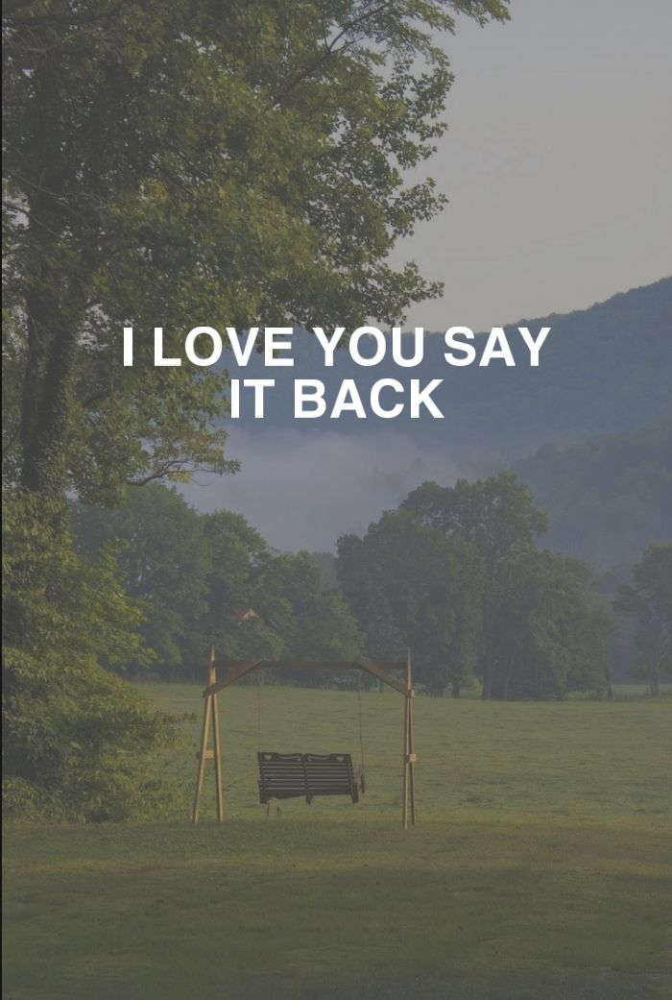
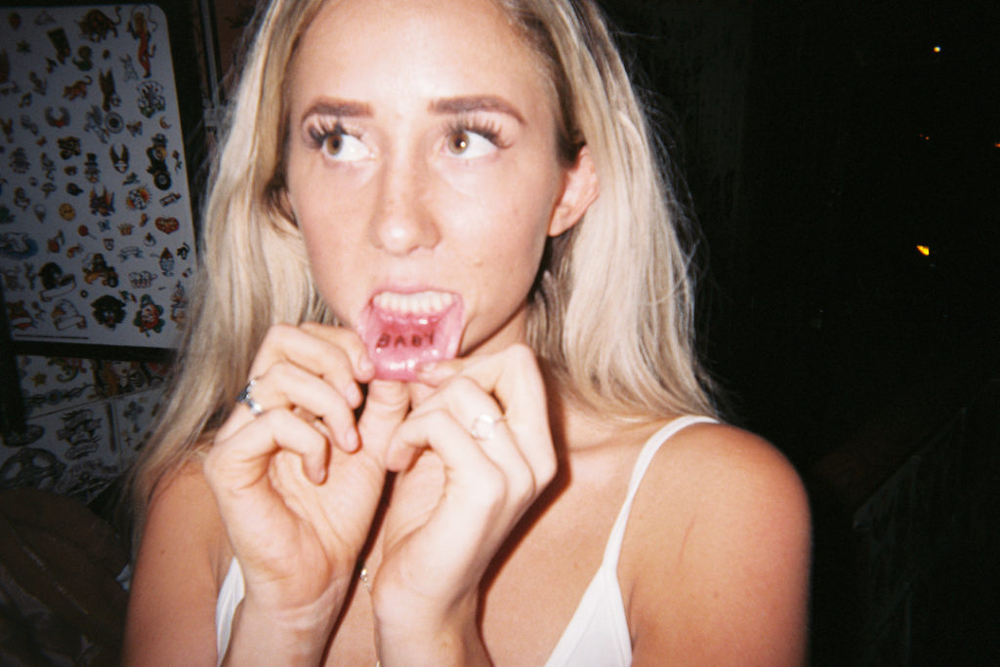
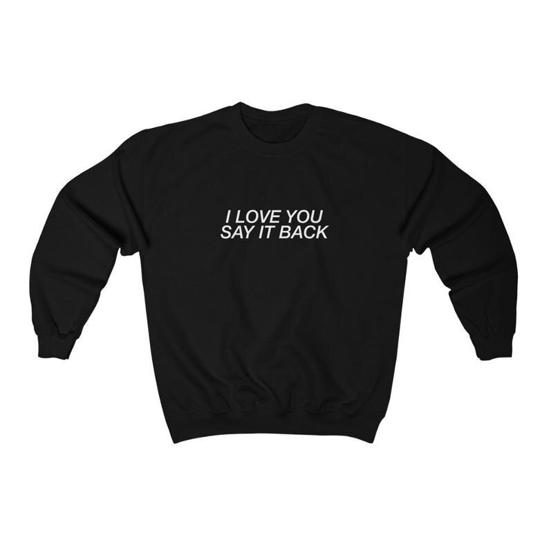

 THE OG IS BACK BABY. BECOME A GHOST TODAY, GET TO SHOPPING. WE LOVE YOU, SAY IT BACK.
I felt anxious about the change. You guys and your opinions are truly the only ones I really care about. So I wondered how you’d react. I mean it is a little nerve-wracking. Like introducing your kids to a new boyfriend. But this boyfriend is like way hotter with tattoos and stuff. So why the change? I came across a picture of a ghost with the word ‘LONELY’ scrawled across the bottom. Ghosts have kind of taken over my life since we launched the brand, so I naturally screenshot any ghosty Inspo, and this one was cool. It had a cool vibe. I couldn’t get it out of my head. “Lonely Ghost.” It just sounded cool. I started scribbling in my sketchbook, “lonely ghost” on some poorly drawn sweatpants, and my heart started racing. I couldn’t wait to get back to the states and show Bronson my idea. “The Lonely Ghost Collection.” Weeks later, that day came and he was stoked. He loved it, just like I did. We sat there on our computers, and about 5 minutes later he says out loud, “Huh. That domain is available.” I was like, “What domain?” “Lonely Ghost” And boyyyy when I tell you a physical embodiment of a real-life lightbulb appeared above my head and flashed brighter than the sun… you won’t believe me. But it happened. I’m pretty sure. We gotta change the name. NOW, LONELY GHOST CAME TO BE.
INDY BLUE SEVERE. India Blue Severe, known on social media as Indy Blue, is an American social media influencer best known for her Instagram presence and her clothing brand Lonely Ghost. Indy started her career as an influencer after high school when she decided she would not attend college and instead started traveling the world.
*another gradient* THE OG CREW SWEATSHIRT  ILYSIB CREWNECK $45 BUY HERE | AVAILABLE NOW IN SIZES XS - 3XLThe ILYISB crewneck is a basic statement peice that you can pair with anything! This was LONELY GHOST’S first ever design. Creating a mood for the brand, it came from Indy’s now fiance, Jack’s, saying to her. ‘’I LOVE YOU, SAY IT BACK.’’ This sweatshirt is the original of us with vinyl stamped lettering, soft cotton fabric, and the Lonely Ghost trademarked saying, ilysib.
* *green block* HOW YOU CAN CONTACT US! ARE WE GONNA BE FRIENDS NOW? WE COULD USE SOME OF THOSE. For any questions or concerns email yes@lonelyghost.co Our customer service is online during the regular business hours of M-F 9am-5pm. Please allow up to 48 hours to receive a reply. If you do not receive a response, please resend the email.*